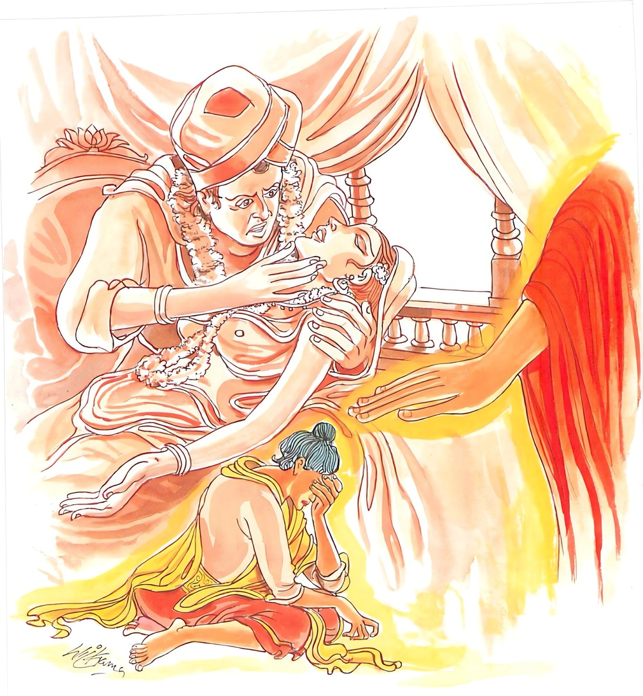

16-5 අනිත්ථිගන්ධ කුමාරයා
මෙම කතාව ධම්මපද අටුවාවෙන් ද කියවන්න.
කාමතො ජායතී සොකො කාමතො ජායතී භයං
කාමතො විප්පමුත්තස්ස නත්ථි සොකො කුතො භයං.
(වස්තුකාම ක්ලේශකාමයැ යි ද්විවිධ වූ) කාමයන් නිසා ශෝකය උපදී. කාමයන් නිසා භය හටගනී. කාමයන්ගෙන් මිදුනු සිතැත්තහුට කිසි ශෝකයෙක් නැත. බියෙක් කොයින් ද?

අනිත්ථිගන්ධ කුමාර තෙමේ බ්රහ්ම ලෝකයෙන් ච්යුත ව අවුත් සැවැත්නුවර මහාසමපත් ඇති එක් කුලගෙයක උපන්නේ ය. උපන්දා සිට ගෑණියක ලඟට යන්නට නො කැමැත්තේ ගෑණියක විසින් ඇඟිලි තුඩුනුදු අල්ලා ගන්නා ලද්දේ නම් හඩන්නේ ය. එබැවින් වත්කඩ කැටියෙකින් වසා වඩාගෙණ උන්ට කිරි පොවත්. මෙසේ කල් යත් වැඩිවියට පත් අනිත්ථිගන්ධ කුමාරයාගේ මවු පියන් ඔහුට මගුලක් කරදීමට කැමැත්ත විචාළ විට “මට ගෑණියකගෙන් වැඩෙක් නැතැ” යි මවුපියන් කළ ඒ මඞ්ගලයෝජනාව ප්රතික්ෂේප කෙළේ ය. එයින් පසුබට නො වූ මවුපියෝ නැවැත නැවැතත් මගුලට කැමැති වන්නැ” යි කීහ. එකල්හි ඔහු රන් කරුවන් පන්සියයක් ගෙන්වා ඔවුනට රන්නික දහසක් දෙවා ඔවුන් ලවා එය ඝන කොට තළවා රන්රුවක් කරවා, මවුපියන් “පුත! ගෑණියක නො ගෙණා කල අපගේ වංශය මුළුමනින් නැසී යන්නේ ය, එහෙයින් ඔබට ශරණ පිණිස කුලකුමරියක ගෙන එන්නෙමි” යි කී කල්හි තමන් තනවා සඟවා තුබූ රන්රුව පෙන්වා “එසේ නම් මේ රන්රුව වැනි කුමරියක ගෙණ එන්නහු නම් ශරණ ගන්නෙමි” යි කියා සිටියේ ය.
එකල්හි ඔවුහු රටේ නම ගිය බමුණන් කීපදෙනකුන් ගෙන්වා කෑම් බීම් ඇඳුම් පැලඳුම් දී සංග්රහ කොට “අපගේ පුත් මහ පිණැත්තේ ය, ඒකාන්තයෙන් මුන් හා සසර එක්ව පින් කළ කුමරියක මෙරට හෝ අන්රටක විය යුතු ය, යවු! මේ රන්රුව ගෙණ, මේ රන්රුව වැනි කුලකුමරියක සොයා ගිවිස්වා ගෙන එවු” යි ඔවුන් පිටත් කොට යැවූහ. ඔවුහු “මැනැවැ” යි රන්රුවද ගෙණ ඉන් නික්ම යන්නෝ මදුරට සාගල නුවරට වන්හ. එනුවර එක් කුලගෙයක වයසින් සොළොස් වයසැති ඒ රන්රුවට වැඩි තරම් වූ මනා රූ ඇති කුමරියක් වූවා ය. ඇය ඇයගේ මවුපියෝ තමන්ගේ සත් මහල්ගෙයි උඩ මහලෙහි රඳවා වැඩුහ. ඒ බමුණෝ “යම් ලෙසකින් මේ නුවර මෙබඳු කුමරියක් වන්නී නම් මේ රන්රුව දැක, මේ රන්රුව අසුවල් කුලගෙයි වැඩෙනා කුමරිය සේ මනා රූ ඇතැයි රන්රුව දකින්නන් කියනු ඇතැ” යි ඒ රන්රුව ගංතොටට යන මග තබා පසෙක සැඟවී හුන්හ.
එකල්හි මේ කුමරියගේ කිරිමවු තොමෝ පළමු කොට ඒ කුමරිය නාවාපියා තොමෝ ද නාන්නට ගංතොටට පැමිණියා රන්රුව දැක “තමාගේ දූ” යි සිතා “අනේ!, නො හික්මුනු කෙල්ල, මේ දැන් මම තී නාවා නික්ම ආවා ම වෙමි, තී මට කලින් කො තැනින් පැනගෙන මට නො පෙණෙන සේ කෙසේ මෙහි ආවා දැ” යි අතින් පහරක් ගැසූ විට තදබවත් වෙනසකට නො පත් බවත් දැන “පින්වත්නි! මෝ මාගේ දූය යි සිතා මම පහරක් ගැසීමි, මේ කිමැ” යි ඇසූ ය. බමුණෝ ඇගෙන් “මෑනියෙනි! තීගේ දූත් මෙබඳු දැ” යි විචාළහ. “මේ රුව මාගේ දුවනිය ඉදිරියෙහි කුමට අගී දැ” යි කී කල්හි “එසේ නම් මෑනියනි! තීගේ දුවනිය අපට දක්වාලව” යි ඔවුහු කීහ. ඕ තොමෝ බමුණන් කැඳවා ගෙණ මාලිගාවට ගොස් එහි අධිපතියනට ඔවුන් දක්වාලූ ය. ඔවුහු බමුණන් හා කළ පිළිසඳර කතායෙන් සතුටුව සිය දුවනිය උඩමාලෙන් පාතමාලයට ගෙන්වා රන්රුව ඉදිරියෙහි සිටවාලූහ. රන්රුව නිෂ්ප්රභ විය. කුමරිය ම රූපශෝභායෙන් නැගී සිටියා ය. අඟපසඟින් සියල්ලන් සිත් ගත්තී ය. බමුණෝ රන්රුව කුමරියගේ මවුපියනට දී ඇය පොරොන්දු කරවා ගෙණ පෙරළා ගොස් අනිත්ථිගන්ධ කුමාරයාගේ මවුපියන්ට ඒ සියලු තොරතුරු දන්වා සිටියහ. ඔවුහු සතුටු සිත් ඇති ව “යවු! වහා කල් නො යවා ඒ කුමරිය කැඳවා ගෙණ එවු” යි පඬුරු පාක්කුඩම් දී සාගල පුරයට ඔවුන් යැවූහ.
අනිත්ථිගන්ධ කුමාර තෙමේ ද එපුවත් අසා ඇසීම් පමණින්ම සෙනහය උපදවා “වහා කැඳවා ගෙණ එත්වා” යි කියා සිටියේ ය. බමුණන් ඒ පඬුරු පාක්කුඩම් ගෙණ එහි ගොස් ඒ සියල්ල කුමරියගේ මවුපියන්ට දී ඔවුන්ගේ නියමයෙන් කුමරිය සරසා ඇය මගුල්රියට නංවා ගෙන එනු ලබන්නී ඉතා සියුමැලි බැවින් හා රියෙන් යෑම නුපුරුදු බැවින් රියෙහි ඒ මේ අත හැපීමෙන් අතර මගදී හටගත් දරුණු වාත රෝගයෙකින් රිය තුළ ම කලුරිය කළා ය. එදා සිට කුමාර තෙමේ ද එහි සිට එන්නන්ගෙන් නිතර නිතරම කුමරියගේ තොරතුරු විමසන්නේ ය. බලවත් සෙනහයෙන් යුක්ත ව ම කරුණු විචාරණ ඔහුට මේ වග එක්වට ම නො කියා කීප දිනක් යවා නො කියා නො හැකි බැවින් කුමරිය අතරමගදී මළ බව දැන්වූහ. කුමාර තෙමේ “එබඳු රූසපුවෙන් යුත් තැනැත්තියක දක්නා පමණකුත් නො ලදිමී” යි උපන් දොම්නස් ඇත්තේ මහාපව්වෙකින් මිරිකෙන්නකු සේ මහත් ශෝක දුඃඛයෙන් මිරිකුනේ විය. ශෝකයට යටව ගියේ ය.
බුදුරජානන් වහන්සේ අනිත්ථිගන්ධ කුමාරයන් ගැන බලා වදාරණ සේක් ඔහුට සෝවාන් වීමට පින් ඇති බව දැක, පිඬු පිණිස හැසිරෙණ සේක් ඔහුගේ ගෙදොරට වැඩි සේක. මවුපියෝ බුදුරජුන් ගෙය තුළට වැඩමවා ගෙණ මැනැවින් වැළඳ වූහ. උන්වහන්සේ වළඳා අවසානයෙහි “අනිත්ථිගන්ධ කුමාරයා කොහි දැ?” යි අසා වදාළවිට “ස්වාමීනි! ඔහු කෑම් බීම් නො ගෙන නිරාහාරව ශෝකාතුරව ඇතුළු ගබඩාවට වැද හිඳීය” යි කීහ. “කැඳවා ගෙණ එවු” යි උන්වහන්සේ වදාළ සේක. කුමාර තෙමේ බුදුරජුන් ඉදිරියට අවුත් උන්වහන්සේ වැඳ එකත් පසෙක හුන්නේය. එකල්හි “දරුව! කුමක් නිසා නො කා නො බී ඉන්නට තරම් ශෝකයෙක් තට උපන්නේ දැ” යි අසා වදාළ විට “ස්වාමීනි! මෙබඳු රූසපුවෙන් යුත් දැකුම්කලු කුමරියක් අතර මගදී කලුරිය කළාය යි අසා මට බලවත් ශෝකයෙන් උපන, එයින් බත් ද නො රුස්නේ ය” යි කී ය. ඉක්බිති බුදුරජානන් වහන්සේ “දරුව! කුමක් නිසා මේ බලවත් ශෝකයෙක් තට උපනැ යි දනිහි දැ?” යි විචාළ සේක. “ස්වාමීනි! නො දනිමි” යි කී කල්හි “දරුව! තට මේ ශෝකය බලවත් ව උපන්නේ කාමය නිසාය, ශෝකයෙක් හෝ බියෙක් හෝ උපදී නම් කාමය නිසා ම උපදීය” යි වදාරා මේ ධර්මදේශනාව කළ සේක.
කාමතො ජායති සොකො කාමතො ජායති භයං,
කාමතො විප්පමුත්තස්ස නත්ථි සොකො කුතො භයන්ති.
කාමය හේතුකොට ශෝකය උපදි. කාමය හේතුකොට බිය උපදි. කාමයෙන් මිදුනහුට ශෝකයෙක් නැත. බියෙක් කොයින් වේ ද.
කාමතො ජායති සොකො = කාමය නිසා ශෝකය උපදි.
කාමතො ජායති භයං = කාමය නිසා බිය උපදි.
කාමතො විප්පමුත්තස්ස = කාමයෙන් මිදුනහුට.
නත්ථි සොකො කුතො භයං = ශෝකයෙක් නැත. බියෙක් කොයින් වේද.
කාම නම්: වස්තුකාම ක්ලේශකාමයෝ ය. [1] මේ දෙවැදෑරුම් කාමයන් නිසා සත්ත්වයාගේ සිත්තුළ ශෝකභය උපදනේ ය. කාමවස්තූන් කෙරෙහි ශෝකය ආශාව ඇතිතාක් ම සත්ත්වයාහට ශෝකයෙන් බියෙන් නිදහසෙක් නැත. සත්ත්වයන් විසින් හැම ගැහටෙක් හැම කරදරයෙක් විඳිනු ලබනුයේ කාමය නිසා ය. කාමයන්ගේ ආදීනව සලකා දොස් දැක එයින් මිදී සිටියහුට කිසිත් ගැහටෙක් කරදරයෙක් නැත්තේය, යි මෙයින් වදාළසේක.
ධර්මදේශනාවගේ අවසානයෙහි අනිත්ථිගන්ධ කුමාරතෙමේ සෝවන් ඵලයෙහි පිහිටියේ ය.
අනිත්ථිගන්ධකුමාර වස්තුව නිමි.
-
2-4 ‘මා කාමරතිසන්ථවං’ යනු බලනු. ↑